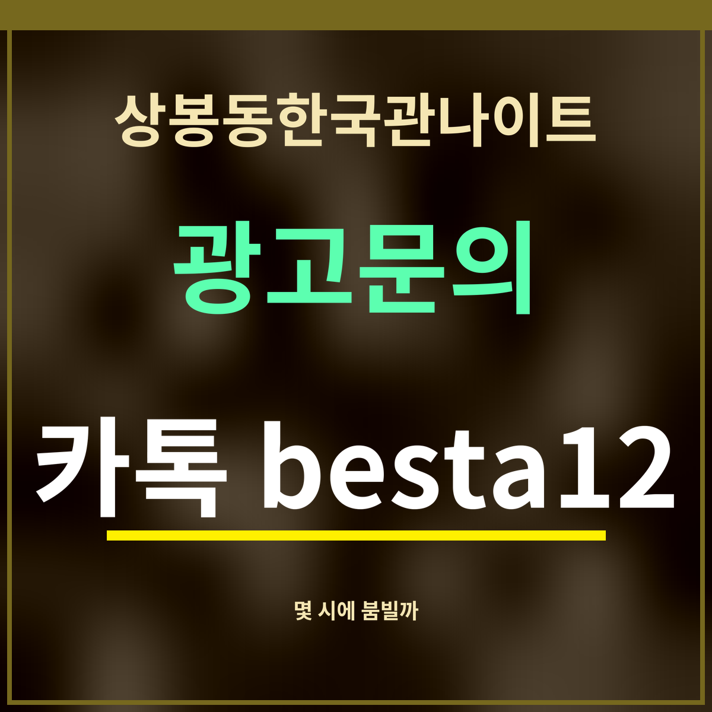

상봉동한국관나이트 몇 시에 붐빌까, 토요일 밤 10시가 정점
가게와 제휴가 없는 정보 안내입니다. 영업시간과 방문 지표는 카카오맵 공개 정보를 2026년 9월 27일에 확인한 값입니다.

핵심 3줄: 영업은 매일 저녁 6시 ~ 다음 날 새벽 6시. 카카오맵 방문 지표가 가장 높은 칸은 토요일 밤 10시(13,929), 그다음이 토요일 밤이 자정을 넘긴 일요일 0시(13,286)입니다. 금요일 밤 10시(13,119)도 이에 가깝습니다.
영업시간
카카오맵에는 월요일부터 일요일까지 날마다 18:00 ~ 06:00으로 올라 있습니다. 쉬는 날은 따로 표시되어 있지 않습니다. 명절이나 가게 사정으로 바뀔 수 있으니 가기 전에 지도 앱에서 한 번 더 보세요.
요일·시간대별 방문 지표
아래 숫자는 카카오맵이 이 장소에 보여 주는 시간대별 방문 지표입니다. 실제 입장 인원이 아니라 카카오가 낸 상대 지표이므로, 「어느 때가 더 붐비나」를 견주는 데만 쓰세요. 가장 높은 칸은 색을 칠했습니다.
| 요일 | 18시 | 20시 | 21시 | 22시 | 23시 | 0시 | 2시 |
|---|---|---|---|---|---|---|---|
| 월 | 1,923 | 3,342 | 4,122 | 4,364 | 4,289 | 3,764 | 1,927 |
| 화 | 2,124 | 3,037 | 4,811 | 5,516 | 4,728 | 2,762 | 1,310 |
| 수 | 2,115 | 3,780 | 6,347 | 6,509 | 5,449 | 3,142 | 1,402 |
| 목 | 2,320 | 4,677 | 6,176 | 8,078 | 6,004 | 4,210 | 1,523 |
| 금 | 3,158 | 7,152 | 10,966 | 13,119 | 12,256 | 4,961 | 2,149 |
| 토 | 3,538 | 6,831 | 12,498 | 13,929 | 13,203 | 10,228 | 4,723 |
| 일 | 1,865 | 3,138 | 4,147 | 5,032 | 4,665 | 13,286 | 5,846 |
표에서 「일요일 0시」가 13,286으로 높은 것은 토요일 밤이 자정을 넘긴 시간이기 때문입니다. 반대로 금요일 0시는 4,961로 뚝 떨어집니다. 금요일 손님은 자정 전에 몰리고, 토요일은 자정을 넘겨서도 붐빈다는 뜻으로 읽을 수 있습니다.
숫자로 고르는 방문 시각
북적이는 분위기를 원하면 금·토요일 밤 9시~11시가 지표가 가장 높은 구간입니다. 한산한 편을 원하면 일·월요일 저녁 6~7시가 1,865~2,094로 가장 낮은 축이고, 일요일 18시(1,865)는 토요일 22시의 약 7분의 1입니다. 주 평균으로 보면 하루 가운데 밤 10시(8,078)가 가장 높고, 새벽 5시(757)가 가장 낮습니다.
상봉동한국관나이트까지 오는 길은 상봉역 2번 출구에서 가는 길에 정리했습니다.
자주 묻는 것
- 몇 시에 문을 여나요?
- 카카오맵 기준 매일 18:00 ~ 다음 날 06:00입니다.
- 가장 붐비는 때는요?
- 토요일 22시(13,929), 일요일 0시(13,286), 토요일 23시(13,203), 금요일 22시(13,119) 순입니다.
- 한산하게 가려면요?
- 일·월요일 저녁 6~7시(1,865~2,094)가 가장 낮은 편입니다.
- 누구나 들어가나요?
- 만 19세 이상만 들어갈 수 있습니다. 신분증을 챙기세요.
한 줄 정리: 상봉동한국관나이트는 저녁 6시에 열고, 토요일 밤 10시 전후가 가장 붐빕니다.
동네 안내 전체: 상봉역 주변 안내